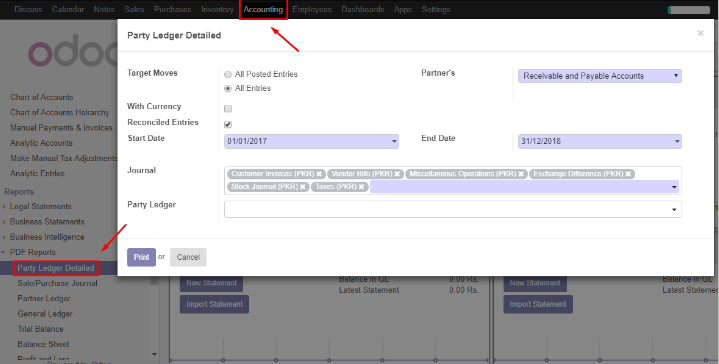
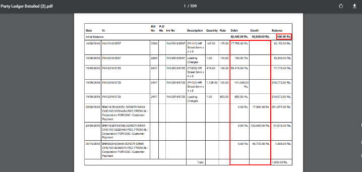

<section class="oe_container">
    <div class="oe_row">
        <h2 class="oe_slogan"><u>Detailed Partner Ledger</u></h2>
        

        <div class="oe_span12">
            <center><p class='oe_mt32'>

            </p></center>
            <p class='oe_mt32'>
	           <b> Detailed partner ledger module, after installation, can be found under PDF reports menu in Accounting module. </b>
            </p>
	
	    <div class="oe_span12">
                
            </div>

	</div>
	<br>
	<div class="oe_span12">
            <p>
               <b> After Selecting required dates, journals, partner and Payable/receivable or both, click on Print button.
		A report in PDF format <br>  will be downloaded in local memory and a partner's ledger with invoicing lines details 
		will be available.</b>
            </p>
	    <div class="oe_span12">
                
            </div>
            

	    
        </div>


    </div>
</section>

